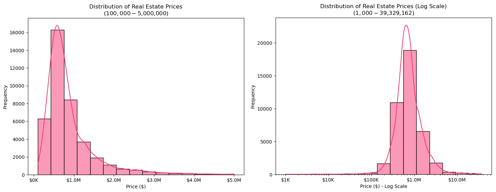

Title
Kareem, Ray, xdd, Yutian
Note: write-up for FP2 is also down in this page
Imagine this scenario. Alex, a fresh MSRED (Master in Real Estate Development) graduate, just accepted a job offer from a real estate company in downtown Boston, and is looking to purchase their first new home! Being a young new real estate agent tasked with presenting Boston's finest housing listings to potential clients, Alex will have to commute to these attractive (and pricey) residential neighborhoods on a daily basis. As Alex navigates Boston's competitive housing market, they're faced with the realities of property speculation that has driven prices ever higher in many neighborhoods. Follow along Alex's journey as they search for a potential new home in Boston, and uncover the impact of market speculation from both both the perspectives of individuals and real estate firms.
Housing Prices vs. Commute Time: What Can You Afford?
[Placeholder for zoom interface]
Seeking to investigate owner occupancy and corporate ownership rates, Alex sifts through the various applications they received. Select a neighbourhood from the dropdown menu to find out more.
[Placeholder for vacancy rates visualization - doors]
[Placeholder for Alex's villain arc - visualization for flipping]
- We have been addressing the feedback from FP1 and incorporated improvements into FP2, by approaching the project as a motivation and question to a targeted audience of ourselves as first-time buyers. As rising professionals, we all want to buy a house one day, but we ask ourselves, how likely will we live close to where we work? Simplifying our project into a narrative approach to explore a one topic: affordability. We discover the challenge of affordability through the lens of a young real estate agent who has to commute to present their pricey listings in Boston.
- For this assignment, we chose to map out affordability and proximity by creating a visualization that shows real estate prices across Boston and identifies areas within specified commute times (namely isochrone polygon) to Alex's workplace based on affordable housing options. We also present the option for the user to select their own workplace, to explore commute times and housing prices alongside Alex's journey, with the option to “reset to Alex's workplace”.
- Before the knowledge of isochrone api, we visualized a navigation route from working place to living place that the user choose. But we found the traveling time was not clear for routes, and that also required too much interaction. This "time map" inspired us into directly visualize travel time as a range on the map.
- We are using a combination of radii to define travel times, thematic/chloropleth features to highlight housing price intensities, and clear annotations indicating preferred travel methods and commute times to Alex's workplace. We used the isochrono polygon to filter available properties, expecting users to explore the trade off between price and commute time.
- For visualizing prices, we realized the distribution is a bit distorted, and decided to use a logarithmic scale for price groups. Eventhough, we still had to remove outliers like $1 and $478,270,876 properties. In the end we picked a price range of $10k ~ $500k. (But we did realize there is story behind $1 properties)

- We adopted a vertical scrolling user interface to present a sequential journey through our main character’s narrative. We selected a red-yellow gradient as the color theme for our first interactive map for housing prices to visually indicate how heated the housing market in Boston is.
- We are planning to use advanced data transformations, such as recalculated price bins or additional annotations (as suggested in the feedback), to better highlight the affordability challenge and amplify differences.
We started with group discussions of how we address the comments from FP1, and the important decision of what visualizations we are drawing for FP2. We finalized the decision of a personal narrative, and chose to temporarily put aside our topic of speculation, and build an interactive isochrone map that visualizes prices, since testing a rather sophisticated interaction will make it clear and easier for designing the remaining visualizaiton. Then we decided the division of labor based on our personal strengths:
- Kareem & Ray: Data Preparation and Analysis, Writeup
- Yutian: Visual and Interaction Design
- xdd: Project Management, Implementation
xdd started with implementing functions and Yutian was providing visual references and sketches from time to time for xdd to implementing. Our discussion with the data side led to some changes to the interaction, such as switching from display travel routing to isochrone map. Ray and Kareem were actively addressing issues encountered, such as reducing the amount of data and analyzing outliers.
Since the implementation work took most of time from Yutian and xdd. Ray and Kareem worked on the writeup part. Roughly 32 people-hours were put on this assignment. The main point that can be improved was to foresee and be prepare for potential issues, such as dataset quality leading to poor visualization, and availability of public transit data.
Should any of the elements take up more development time than expected, we will evaluate our scope as a team at the end of W2, and potentially reduce the complexity of cosmetic user interaction elements (e.g. parallax effect during scrolling) to manage time spent on UX development, and/or drop one of the three visualizations as a back-up plan, to focus on narrative and user experience integration for the remainder of the time.
Week 0: ~4/9
- Data Analysis for the first viz: KR
- Develop first interaction viz and overall wireframe: XY
- Defining the scope of the project: KR
Week 1: 4/10~4/13 >> First Mock-up
- Data Analysis for the second viz: KR
- Develop second interaction viz: XY
- Mock-up the first draft for the story page: RY
Week 2: 4/14~4/20
- Data Analysis for the third viz: KR
- Develop third interaction viz: XY
- Develop features for user experiences: RY
Week 3: 4/21~4/27 4/28 (Mon): MVP Project Presentation
- First draft of the whole narrative contents: KR
- Finalize the whole storyline and content integration: XY
- Recording demo video for MVP presentation: KRXY
Week 4: 4/28~5/4
- Revision based on MVP presentation: KRXY
- Final production of remaining viz: XY
- Final production of remaining content: KR
Week 5: 5/5~5/11 5/12 (Mon): Final Project Exhibition
- Final website debugging: XY
- Final project report: KR
K = Kareem | R = Ray | Y = Yutian | X = xdd
Title